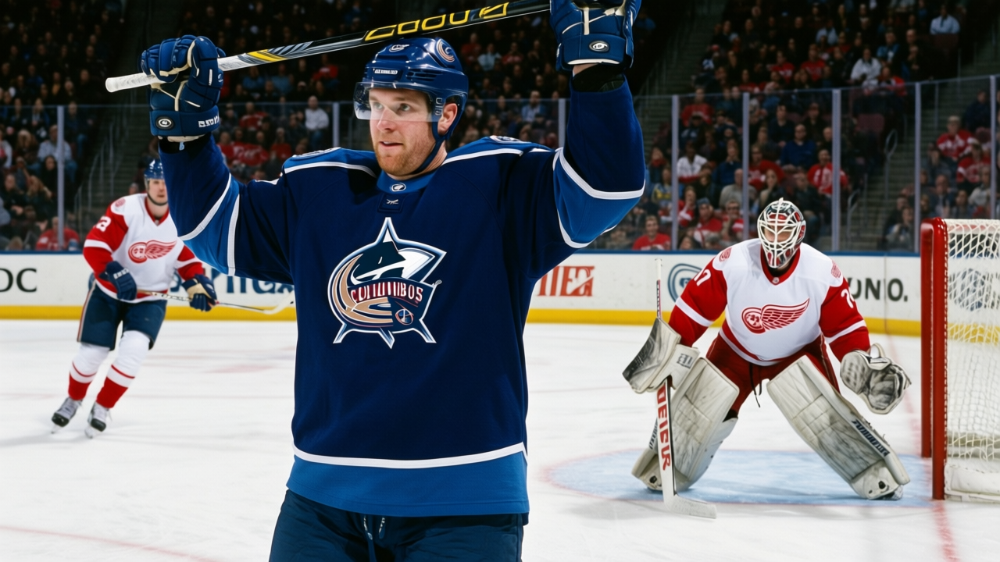

RUMOR METER: The 3 Unhappiest Men in the League Wear Columbus Sweaters. All 3 Are Expiring. 🔥🔥
Marc Denis is a free agent in waiting at 72 morale. Wright and Spacek sit the bench on expiring deals while their captain carries 81 points.
 E.J. "Ears" CallahanInsider · The Hot Stove
E.J. "Ears" CallahanInsider · The Hot Stove

CBJ unhappy expiring class

Three of the four players at 72 on the Bureau's Morale Scale play for  Columbus Blue Jackets.
Columbus Blue Jackets.  Marc Denis86, Tyler Wright76 and
Marc Denis86, Tyler Wright76 and  Jaroslav Spacek74 are all unsigned past June. The fourth, Chris Schmidt63 of
Jaroslav Spacek74 are all unsigned past June. The fourth, Chris Schmidt63 of  Chicago Blackhawks, is a 59-rated centre with zero games played this season. Columbus carries a club average of 87.2, the second-lowest in the league behind
Chicago Blackhawks, is a 59-rated centre with zero games played this season. Columbus carries a club average of 87.2, the second-lowest in the league behind  Ottawa Senators at 85.8.
Ottawa Senators at 85.8.
| Player | Pos | Morale | Salary | Yrs left | GP | Pts |
|---|---|---|---|---|---|---|
| Denis | G | 72 | $1.00M | 0 | 19 | — |
| Wright | C | 72 | $0.80M | 1 | 41 | 6 |
| Spacek | D | 72 | $1.50M | 1 | 15 | 4 |
Denis moves the market. An 86-rated goaltender at $1.00M with no contract after this season, 19 starts on a club sitting at 44 points in the Central Division. Columbus trails  Detroit Red Wings by 8 and
Detroit Red Wings by 8 and  Nashville Predators by 14. League sources say Columbus is unlikely to re-sign him and that he'll be moved if a contender calls. He's a playoff-team backup at half the salary of the starters those clubs already carry.
Nashville Predators by 14. League sources say Columbus is unlikely to re-sign him and that he'll be moved if a contender calls. He's a playoff-team backup at half the salary of the starters those clubs already carry.
Wright and Spacek are the bench problems. Wright has 6 points in 41 games at 10.3 minutes a night. Spacek chips in 4 points across 15 games at 10.6 minutes a night. Neither is on the injured list. The coaches dress them when the lines in front run thin, and that hasn't been often enough to keep either man content at 72. Ten points between them for the season.
The captain chose this place. Geoff Sanderson told The Tunnel's Marcus Bell in a sit-down this week that "coming back here, to Columbus, that was the first time I picked a place. Not the other way around." He leads the room with 41 goals, 40 assists and 81 points in 41 games.

Columbus holds 5 picks in the 2005 draft, 1 of them a first-rounder. They don't need draft capital and they don't need to rebuild. They need a taker for $1.50M on a 74-rated defenceman and a backup goaltender at $1.00M who doesn't want to be there.